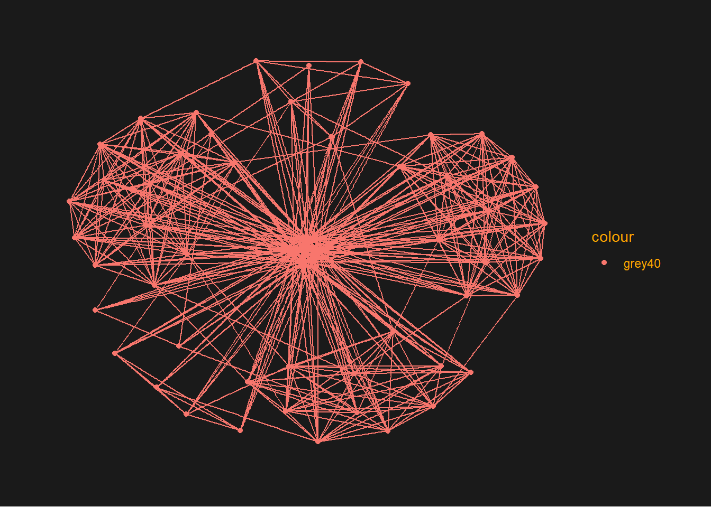
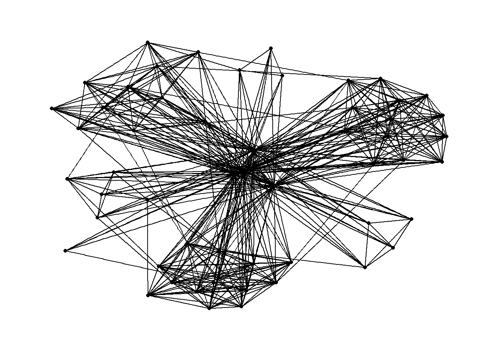
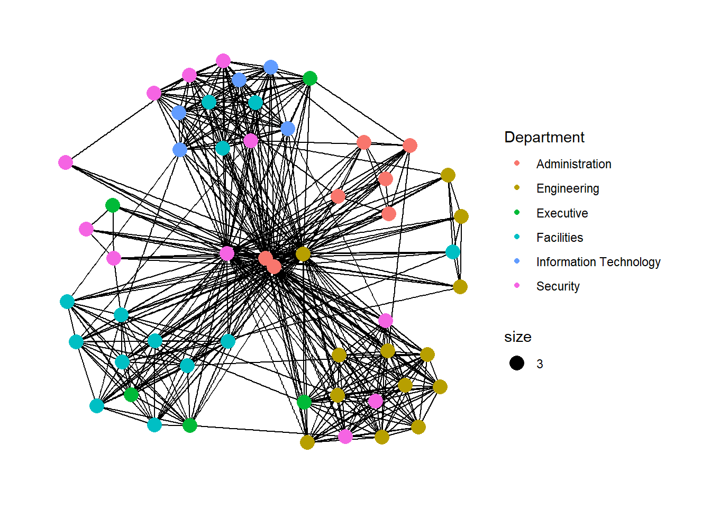
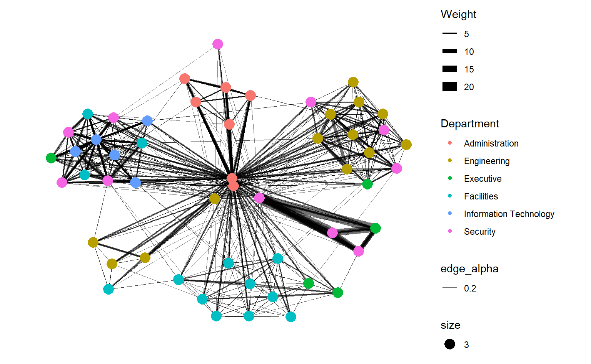
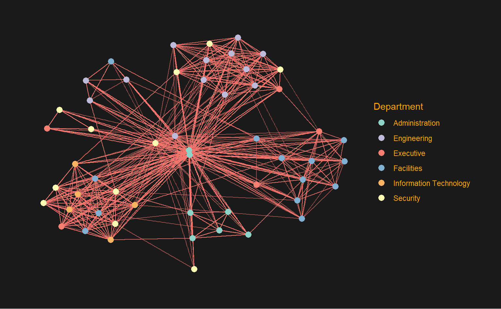

Hands-on_Ex08 (Network graphs)
Lesson 5: Network Data Visualisation and Analysis
*located in chapter 27 of Prof’s E-book
Overview
In this hands-on exercise, I will learn how to model, analyse and visualise network data using R.
By the end of this hands-on exercise, I will be able to:
create graph object data frames, manipulate them using appropriate functions of dplyr, lubridate, and tidygraph,
build network graph visualisation using appropriate functions of ggraph,
compute network geometrics using tidygraph,
build advanced graph visualisation by incorporating the network geometrics, and
build interactive network visualisation using visNetwork package.
27.2 Getting Started
27.2.1 Installing and launching R packages
In this hands-on exercise, four network data modelling and visualisation packages will be installed and launched. They are igraph, tidygraph, ggraph and visNetwork. Beside these four packages, tidyverse and lubridate, an R package specially designed to handle and wrangling time data will be installed and launched too.
The code chunk:
27.3 The Data
The data sets used in this hands-on exercise is from an oil exploration and extraction company. There are two data sets. One contains the nodes data and the other contains the edges (also know as link) data.
27.3.1 The edges data
- GAStech-email_edges.csv which consists of two weeks of 9063 emails correspondances between 55 employees.

27.3.2 The nodes data
- GAStech_email_nodes.csv which consist of the names, department and title of the 55 employees.

27.3.3 Importing network data from files
In this step, you will import GAStech_email_node.csv and GAStech_email_edges-v2.csv into RStudio environment by using read_csv() of readr package.
27.3.4 Reviewing the imported data
Next, we will examine the structure of the data frame using glimpse() of dplyr.
Rows: 9,063
Columns: 8
$ source <dbl> 43, 43, 44, 44, 44, 44, 44, 44, 44, 44, 44, 44, 26, 26, 26…
$ target <dbl> 41, 40, 51, 52, 53, 45, 44, 46, 48, 49, 47, 54, 27, 28, 29…
$ SentDate <chr> "6/1/2014", "6/1/2014", "6/1/2014", "6/1/2014", "6/1/2014"…
$ SentTime <time> 08:39:00, 08:39:00, 08:58:00, 08:58:00, 08:58:00, 08:58:0…
$ Subject <chr> "GT-SeismicProcessorPro Bug Report", "GT-SeismicProcessorP…
$ MainSubject <chr> "Work related", "Work related", "Work related", "Work rela…
$ sourceLabel <chr> "Sven.Flecha", "Sven.Flecha", "Kanon.Herrero", "Kanon.Herr…
$ targetLabel <chr> "Isak.Baza", "Lucas.Alcazar", "Felix.Resumir", "Hideki.Coc…The output report of GAStech_edges above reveals that the SentDate is treated as “Character” data type instead of date data type. We have to change the data type of SentDate field back to “Date”” data type.
27.3.5 Wrangling time
[1] Monday Tuesday Wednesday Thursday Friday
7 Levels: Sunday < Monday < Tuesday < Wednesday < Thursday < ... < Saturdayboth dmy() and wday() are functions of lubridate package. lubridate is an R package that makes it easier to work with dates and times.
dmy() transforms the SentDate to Date data type.
wday() returns the day of the week as a decimal number (1-7) or an ordered factor (Monday, Tuesday,..) if label is TRUE. The argument abbr is FALSE keep the daya spells in full, i.e. Monday. The function will create a new column in the data.frame i.e. Weekday and the output of wday() will save in this newly created field.
the values in the Weekday field are in ordinal scale.
27.3.6 Reviewing the revised date fields
Table below shows the data structure of the reformatted GAStech_edges with the correct data formats.
Rows: 9,063
Columns: 9
$ source <dbl> 43, 43, 44, 44, 44, 44, 44, 44, 44, 44, 44, 44, 26, 26, 26…
$ target <dbl> 41, 40, 51, 52, 53, 45, 44, 46, 48, 49, 47, 54, 27, 28, 29…
$ SentDate <date> 2014-01-06, 2014-01-06, 2014-01-06, 2014-01-06, 2014-01-0…
$ SentTime <time> 08:39:00, 08:39:00, 08:58:00, 08:58:00, 08:58:00, 08:58:0…
$ Subject <chr> "GT-SeismicProcessorPro Bug Report", "GT-SeismicProcessorP…
$ MainSubject <chr> "Work related", "Work related", "Work related", "Work rela…
$ sourceLabel <chr> "Sven.Flecha", "Sven.Flecha", "Kanon.Herrero", "Kanon.Herr…
$ targetLabel <chr> "Isak.Baza", "Lucas.Alcazar", "Felix.Resumir", "Hideki.Coc…
$ Weekday <ord> Monday, Monday, Monday, Monday, Monday, Monday, Monday, Mo…27.3.7 Wrangling attributes
A close examination of GAStech_edges data.frame reveals that it consists of individual e-mail flow records. This is not very useful for visualisation.
In view of this, we will
filter
Work relatedemailsgroup-by senders, receivers and day of week
aggregate to get the total count of each unique combination of the above to get
Weightas a new columnfilter twice to remove self-loops and edges that occurred only once
ungroup()function is used to remove the grouping created bygroup_by()so that the resulting dataframe is not grouped by any variable(s) anymore. This is useful when we want to apply further operations or analysis to the individual rows of data rather than grouped results.
The code chunk:
Show the code
GAStech_edges_aggregated <- GAStech_edges %>% # after filter 6935 rows remain
filter(MainSubject=='Work related') %>%
group_by(source, target, Weekday) %>%
summarise(Weight = n()) %>% # 3706 rows remaining and Weight col added
filter(source != target) %>% #3493 rows remaining
filter(Weight >1) %>% # 1456 rows remaining
ungroup() # 1456 x 4 columns four functions from dplyr package are used. They are: filter(), group(), summarise(), and ungroup().
The output data.frame is called GAStech_edges_aggregated.
A new field called Weight has been added in GAStech_edges_aggregated.
After ungroup(), we can analyse row by row instead of by unique combination of source, target and weekday
27.3.8 Reviewing the revised edges file
Table below shows the data structure of the reformatted GAStech_edges_aggregated data frame
Rows: 1,456
Columns: 4
$ source <dbl> 1, 1, 1, 1, 1, 1, 1, 1, 1, 1, 1, 1, 1, 1, 1, 1, 1, 1, 1, 1, 1,…
$ target <dbl> 2, 2, 2, 2, 3, 3, 3, 3, 4, 4, 4, 4, 5, 5, 5, 5, 6, 6, 6, 6, 7,…
$ Weekday <ord> Monday, Tuesday, Wednesday, Friday, Monday, Tuesday, Wednesday…
$ Weight <int> 4, 3, 5, 8, 4, 3, 5, 8, 4, 3, 5, 8, 4, 3, 5, 8, 4, 3, 5, 8, 4,…27.4 Creating network objects using tidygraph
In this section, I will learn how to create a graph data model by using tidygraph package. It provides a tidy API for graph/network manipulation. While network data itself is not tidy, it can be envisioned as two tidy tables, one for node data and one for edge data. tidygraph provides a way
to switch between the two tables and provides dplyr verbs for manipulating them.
to access to a lot of graph algorithms with return values that facilitate their use in a tidy workflow.
Before getting started, please read these two articles:
27.4.1 The tbl_graph object
Two functions of tidygraph package can be used to create network objects, they are:
tbl_graph()creates a tbl_graph network object from nodes and edges data.as_tbl_graph()converts network data and objects to a tbl_graph network. Below are network data and objects supported byas_tbl_graph()a node data.frame and an edge data.frame,
data.frame, list, matrix from base,
igraph from igraph,
network from network,
dendrogram and hclust from stats,
Node from data.tree,
phylo and evonet from ape, and
graphNEL, graphAM, graphBAM from graph (in Bioconductor).
27.4.2 The dplyr verbs in tidygraph
- activate() verb from tidygraph serves as a switch between tibbles for nodes and edges. All dplyr verbs applied to tbl_graph object are applied to the active tibble.

In the above the .N() function is used to gain access to the node data while manipulating the edge data. Similarly .E() will give you the edge data and .G() will give you the tbl_graph object itself.
%>% mutate(Species = ifelse(leaf, as.character(iris$Species)[label], NA))- This line adds a new column calledSpeciesto thenodesdata frame. Theifelse()function assigns a value to this column based on whether the node is a leaf or not. If it is a leaf, the value is taken from thelabelcolumn of theiris$Speciesdata frame (which contains the actual species names), and if it is not a leaf, the value is set toNA.%>% mutate(to_setose = .N()$Species[to] == 'setosa')- This line adds a new column calledto_setoseto theedgesdata frame. Theifelse()function assigns a value to this column based on whether the target node of each edge is a member of thesetosaspecies or not. Thetovariable refers to the index of the target node in thenodesdata frame, and the.N()function allows access to theSpeciescolumn of thenodesdata frame.
27.4.3 Using tbl_graph() to build tidygraph data model.
In this section, I will use tbl_graph() of tinygraph package to build an tidygraph’s network graph data.frame.
Before typing the codes, review to reference guide of tbl_graph()
GAStech_nodes has ID of nodes as first column. Label is optional?
GAStech_edges_aggregated contains source and target as column 1 and 2.
27.4.4 Reviewing the output tidygraph’s graph object
# A tbl_graph: 54 nodes and 1456 edges
#
# A directed multigraph with 1 component
#
# A tibble: 54 × 4
id label Department Title
<dbl> <chr> <chr> <chr>
1 1 Mat.Bramar Administration Assistant to CEO
2 2 Anda.Ribera Administration Assistant to CFO
3 3 Rachel.Pantanal Administration Assistant to CIO
4 4 Linda.Lagos Administration Assistant to COO
5 5 Ruscella.Mies.Haber Administration Assistant to Engineering Group Manag…
6 6 Carla.Forluniau Administration Assistant to IT Group Manager
# ℹ 48 more rows
#
# A tibble: 1,456 × 4
from to Weekday Weight
<int> <int> <ord> <int>
1 1 2 Monday 4
2 1 2 Tuesday 3
3 1 2 Wednesday 5
# ℹ 1,453 more rowsThe output above reveals that GAStech_graph is a tbl_graph object with 54 nodes and 4541 edges.
The command also prints the first six rows of “Node Data” and the first three of “Edge Data”.
It states that the Node Data is active (Node data is on top of Edge data). The notion of an active tibble within a tbl_graph object makes it possible to manipulate the data in one tibble at a time.
27.4.6 Changing the active object
The nodes tibble data frame is activated by default, but you can change which tibble data frame is active with the activate() function. Thus, if we wanted to rearrange the rows in the edges tibble to list those with the highest “weight” first, we could use activate() and then arrange().
For example,
# A tbl_graph: 54 nodes and 1456 edges
#
# A directed multigraph with 1 component
#
# A tibble: 1,456 × 4
from to Weekday Weight
<int> <int> <ord> <int>
1 40 41 Tuesday 23
2 40 43 Tuesday 19
3 41 43 Tuesday 15
4 41 40 Tuesday 14
5 42 41 Tuesday 13
6 42 40 Tuesday 12
# ℹ 1,450 more rows
#
# A tibble: 54 × 4
id label Department Title
<dbl> <chr> <chr> <chr>
1 1 Mat.Bramar Administration Assistant to CEO
2 2 Anda.Ribera Administration Assistant to CFO
3 3 Rachel.Pantanal Administration Assistant to CIO
# ℹ 51 more rowsVisit the reference guide of activate() to find out more about the function.
27.5 Plotting Static Network Graphs with ggraph package
ggraph is an extension of ggplot2, making it easier to carry over basic ggplot skills to the design of network graphs.
As in all network graph, there are three main aspects to a ggraph’s network graph, they are:
For a comprehensive discussion of each of this aspect of graph, please refer to their respective vignettes provided.
27.5.1 Plotting a basic network graph
The code chunk below uses
geom-edge_link() and
geom_node_point() to plot a network graph by using GAStech_graph.
Before getting started, it is advisable to read their respective reference guide at least once.
Show the code

The basic plotting function is
ggraph(), which takes the data to be used for the graph and the type of layout desired. Both of the arguments forggraph()are built around igraph. Therefore,ggraph()canaccept either an igraph object or a tbl_graph object.igraphuses an adjacency matrix or an edge list and is more focused on traditional graph theory algorithms and operations.In an edge list, each row represents an edge, with the first two columns containing the indices of the nodes that the edge connects.
tidygraphuses atbl_graphobject, which is a tidy data frame representation of a graph. Thenodesandedgesdata frames contain the metadata about the nodes and edges, respectively, and can be manipulated using thedplyrsyntax
27.5.2 Changing the default network graph theme
In this section, use theme_graph() to remove the x and y axes. Before getting started, it is advisable to read it’s reference guide at least once.
Show the code

- ggraph introduces a special ggplot theme that provides better defaults for network graphs than the normal ggplot defaults.
theme_graph(), besides removing axes, grids, and border, changes the font to Arial Narrow (this can be overridden).
- The ggraph theme can be set for a series of plots with the
set_graph_style()command run before the graphs are plotted or by usingtheme_graph()in the individual plots.

27.5.4 Working with ggraph’s layouts
ggraph support many layout for standard used, they are: star, circle, nicely (default), dh, gem, graphopt, grid, mds, spahere, randomly, fr, kk, drl and lgl. Figures below and on the right show layouts supported by ggraph().


27.5.5 Fruchterman and Reingold layout
The code chunks below will be used to plot the network graph using Fruchterman and Reingold layout.
To change the layout of ggraphs, refer to ggraph_layout
Show the code

- layout argument is used to define the layout to be used.
27.5.6 Modifying network nodes
In this section, I will colour each node by referring to their respective departments.
Show the code

- geom_node_point is equivalent in functionality to geo_point of ggplot2. It allows for simple plotting of nodes in different shapes, colours and sizes. In the codes chnuks above colour and size are used.
27.5.7 Modifying edges
In the code chunk below, the thickness of the edges will be mapped with the Weight variable. geom_edge_link search individually
Show the code
g <- ggraph(GAStech_graph, layout='nicely') + #<<< refer to ggraph_layout link above
geom_edge_link(aes(width=Weight, alpha= 0.2)) + #<< thickness by weight and change alpha
scale_edge_width(range = c(0.1, 5)) + #<< control max size of edge , else my plot is ugly
geom_node_point(aes(colour=Department, size =3))
g + theme_graph()
- geom_edge_link draws edges in the simplest way - as straight lines between the start and end nodes. But, it can do more that that. In the example above, argument width is used to map the width of the line in proportional to the Weight attribute and argument alpha is used to introduce opacity on the line.
The code chuck below assign colour to the nodes manually without hard-coding. I have also change the background and text colour.
activate the nodes df and extract the
uniquedepartment using thepull()functionuse
length()function to find the nunique departmentsbrewer.pal()function generates a set of colors based on the number of unique departmentssetNames()function is used to map the colors to the departmentsscale_color_manual()function is used to apply the color mapping to the Department nodes.
Show the code
library(RColorBrewer)
# Get unique departments from data
departments <- unique(GAStech_graph %>% activate(nodes) %>% pull(Department))
# Generate color palette based on number of unique departments
num_departments <- length(departments)
color_palette <- brewer.pal(num_departments, "Set3")
# Create color mapping for Department nodes
color_mapping <- setNames(color_palette, departments)
# Create plot with color mapping
j <- ggraph(GAStech_graph, layout='fr') +
geom_edge_link(aes(alpha=0.1, colour='white'),show.legend = FALSE) +
geom_node_point(aes(colour=Department), size = 3) +
scale_color_manual(values = color_mapping) +
theme_graph(background = 'grey10',text_colour = 'orange')
j
If choose to hard code, refer to the code chunk below. I have tried ‘star’ layout , wonder if the red adminstrative node in the middle is related to high centrality?
Show the code
ggraph(GAStech_graph, layout='star') +
geom_edge_link(aes()) +
geom_node_point(aes(colour=Department), size =4) +
scale_color_manual(values = c("Administration" = "red",
"Engineering" = "blue",
"Executive" = "green",
"Facilities" = "purple",
"Information Technology" = "yellow",
"Security" = "pink")) +
theme_graph()
I have tried to color code the edges by Weekday. However this graph is hard to interpret due to overplotting. We should try to facet by Weekday instead.
27.6 Creating facet graphs
Another very useful feature of ggraph is faceting. In visualising network data, this technique can be used to reduce edge over-plotting in a very meaning way by spreading nodes and edges out based on their attributes. In this section, you will learn how to use faceting technique to visualise network data.
There are three functions in ggraph to implement faceting, they are:
facet_edges() whereby nodes are always drawn in a panel even if the node data contains an attribute named the same as the one used for the edge facetting,
facet_nodes() whereby edges are only draw in a panel if both terminal nodes are present here, and
facet_graph() faceting on two variables simultaneously.
27.6.1 Working with facet_edges()
In the code chunk below, facet_edges() is used. Before getting started, it is advisable for you to read it’s reference guide at least once. Also can refer to ggraph().
27.6.2 Working with facet_edges(): change legend position
The code chunk below uses theme() to change the position of the legend.